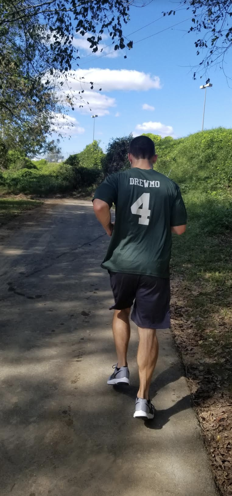

My Fitness Log
Week of 10/29
Marathon week!
Week of 10/22
Minor setback this week, as I seem to have strained my left calf while training. With the marathon a week away, I just need to rest it and do some physical therapy. This entire race is about being #paulstrong and I'm going to push through and be ready to go on raceday!
Week of 10/15
I did the same basic training regimine this week, ending with an 80 minute run on Sunday (it rained Saturday). I have also been trying to incorporate another aspect of Paul's overall fitness mantra - the nutrition aspect. I have been taking in a lot of carbs to fuel all the running.
Week of 10/8
This was the first real week of marathon training. I have never ran 13.1 miles before, and don't really know the proper way to train. So after a few google searches I kind of came up with a system. My normal jog to the gym and back still continued (lifted lighter at the gym), with a faster paced run on Wednesday. Nothing long distance during the week, and we ran for 1 hour along the greenway on Saturday.
Week of 10/1
Drewmo and I decided we're going to do a half marathon. We had planned on 10k, but we wanna push ourselves. We have a month to train for the City of Oaks half marathon. We went to Umstead and ran for 45 minutes on Saturday.

Week of 9/24
The weather this week was phenomenal. I went to William B. Umstead State Park in Raleigh on Saturday - a beautiful state park with miles of trails, streams, and a lake. I ran most of the time, though I stopped to take a few pictures and bask in the weather.


Week of 9/17
Week 4 was back to normal in Raleigh. Lifetime reopened and the rain stopped so I was able to get to the gym. My roommate, Drewmo, and I decided to sign up for a marathon to run for Paul. Since Paul is a runner and was training for the New York Marathon, we will give it a shot. Ok maybe not a marathon, I can't do that yet. But we'll do the half marathon. Yea we'll start with the 10k, that's a start.
Week of 9/10
Week 3 had some complications in the form of Hurricane Florence. I was able to work out in our apartment complex; we were pretty much confined there all week. Thankfully, we were fine here in Raleigh, and the storm dipped south so it missed Tidewater. Unfortunately, it did wreck the eastern part of the Carolinas, including Wilmington. The Carolinas are recovering and are #PAULSTRONG.
Week of 9/3
Week 2 was another #strong one. I started running to the gym; it's only about a mile away but that's more than I've ran in a long time. It felt like upper 90 degrees here all week, so it's safe to say I sweat out all the 'Pints for Paul' and then some.
Week of 8/27
I just got back from visiting Paul at the University of Maryland Medical Center. I decided to make this website to keep myself accountable and make sure I do something active every day. I walked to the gym Monday through Friday and worked out each day. On Saturday, I was at home in Virginia and went out kayaking with my mom and Uncle Dave.
On Sunday, I was in Wilmington, NC for 'Pints for Paul', a fundraiser organized by Kyle Brown and Drewmo at a local brewery (Mad Mole Brewing) - we drank a lot of beers for Paul and raised a lot of money for him!